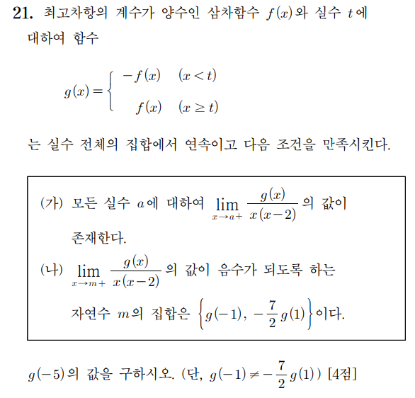

2026학년도 대학수학능력시험 수학 21번
식부터 세우지 않습니다. 조건을 그래프로 번역하고, 세워 본 가설을 스스로 무너뜨리고, 왜 그 범위인지까지 손으로 확인합니다.

전체 지도
접는 위치에서 두 높이가 같아야 한다 →
분모가 0이 되는 곳에서 분자도 0 →
세 후보 중 살아남는 것은 하나뿐
음수인 자연수가 정확히 2개 →
두 값을 배정하고 연립 →
이 문제의 진짜 주인공은 가 아니라 몫함수 입니다. 이 함수가 직선 두 조각이라는 걸 알아채는 순간 문제가 무너집니다.
다섯 관문 중, 계산이 필요한 곳은 몇 번째일까?
GATE 1 · 그래프 번역
두 조각이 에서 만나려면, 그 자리의 높이는 얼마여야 할까?
GATE 1 · 결론
에서 . 즉 는 의 근입니다. 어느 근인지는 아직 모릅니다.
이제 의 근을 찾으면 의 후보가 나온다. 근은 어디서 알아낼까?
GATE 2 · 조건 (가)
분모 가 0이 아닌 곳에서 이 몫은 연속함수의 몫이라 극한이 저절로 존재합니다. 따로 조사할 필요가 없습니다. 위험한 곳은 분모가 0이 되는 두 점뿐입니다.
분모가 0으로 갈 때, 유한한 값이 남으려면 분자는 어떻게 되어야 할까?
GATE 2 · 직접 확인
그래서 과 는 각각 얼마여야 할까?
GATE 2 · 결론
과 — 조건 (가)가 준 선물
— 아직 어디 있는지 모른다
— 세 후보
와 은 다른 이름입니다. 는 접는 위치, 은 세 번째 근. 우연히 같을 수도 있고, 아닐 수도 있습니다.
세 후보 중 무엇이 살아남을까?
GATE 3 · 이 문제의 심장
— 기울기 와 인 두 직선
과 에서는 원래 식이 정의되지 않으므로 그래프에 구멍이 뚫립니다. (극한은 존재하지만 함숫값은 없다.)
두 직선이 에서 만날까, 아니면 튈까?
GATE 3 · ① 왜 t=2인가 · 직접 확인
세 경우 중, 그래프가 x축 아래로 내려가는 자연수를 두 개 만들 수 있는 건 어느 것일까?
GATE 3 · 후보 1 탈락
그런데 조건 (나)는 그런 자연수가 개 있다고 말한다. 무엇이 잘못됐을까?
GATE 3 · 후보 2 · 1단계
여기까지는 모순이 없다. 그러면 을 어떻게 걸러낼 수 있을까?
GATE 3 · 후보 2 탈락
→
그러면 마지막 후보는 하나뿐이다. 무엇일까?
GATE 3 · 후보 3 생존
의 왼쪽과 오른쪽에서 값의 부호가 반대다. 조건 (나)는 어느 쪽을 묻고 있을까?
GATE 3 · 결론
V자라서 항상 0 이상. 음수인 자연수가 하나도 없다 → 집합이 공집합.
개수는 맞출 수 있지만 이 값이 항상 음수. 자연수가 될 수 없다.
왼쪽은 양수, 오른쪽은 음수. 우극한을 묻는 조건 (나)와 정확히 맞물린다.
이제 남은 미지수는 와 둘뿐이다. 부터 잡아 보자.
GATE 4 · ③ 왜 m을 2부터 세는가 · 1단계
각 자연수 의 오른쪽에서 다가갈 때 몫의 값이 음수인지 확인하고, 음수인 입력값 만 모아 집합을 만듭니다.
이므로 뒤집힌 조각을 쓴다 →
이므로 원래 조각을 쓴다 →
같은 "자연수 검사"인데 만 다른 식을 씁니다. 이게 다음 장의 출발점입니다.
에서 이 음수가 되려면 은 어때야 할까?
GATE 4 · ③ 왜 m을 2부터 세는가 · 2단계
이어야 하고, 이므로
이들은 이고, 이므로 → 전부 양수
집합 — 그런데 조건 (나)는 서로 다른 두 값을 요구한다
검사는 부터 시작하면 된다. 은 처음부터 후보가 아니다.
그러면 는 왜 거의 항상 들어갈까?
GATE 4 · ③ 왜 m을 2부터 세는가 · 3단계
이면 양수 → 탈락
이면 음수 → 통과
접힘점 와 조건 (나)의 검사점 가 같은 자리입니다. 그래서 부호가 뒤집히고, 그래서 이 문제가 성립합니다.
이제 를 차례로 세어 보자. 몇 개까지 음수일까?
GATE 4 · ② 왜 3<r≤4 인가 · 직접 확인
원소가 정확히 2개가 되는 의 구간은 어디부터 어디까지일까?
GATE 4 · ② 왜 3<r≤4 인가 · 정리
| 의 범위 | 음수인 자연수 | 원소 개수 | 조건 (나) |
|---|---|---|---|
| r ≤ 2 | 없음 (∅) | 0 | ✕ |
| 2 < r ≤ 3 | { 2 } | 1 | ✕ |
| 3 < r ≤ 4 | { 2, 3 } | 2 | ✓ |
| 4 < r ≤ 5 | { 2, 3, 4 } | 3 | ✕ |
| r > 5 | { 2, 3, 4, … } | 4 이상 | ✕ |
경계값 과 는 각각 포함될까, 제외될까?
GATE 4 · ② 왜 3<r≤4 인가 · 경계
에서 . 0은 음수가 아니다 → 집합 , 원소 1개. 탈락.
에서 . 역시 음수가 아니므로 는 안 들어간다 → 집합 . 통과.
집합이 이라는 걸 알았다. 이제 이 두 숫자를 어디에 배정해야 할까?
GATE 5 · 회수 1
몫함수의 부호로 구한 자연수 집합
단,
집합은 순서가 없습니다. 어느 쪽이 2이고 어느 쪽이 3인지는 아직 모릅니다. 두 경우를 모두 따져 봐야 합니다.
과 중 어느 쪽이 클까? 계산하지 않고 알 수 있을까?
GATE 5 · 회수 2
이고 이므로 두 값 모두 양수입니다. 자연수 2, 3의 후보로 손색이 없습니다.
두 식 과 의 차를 계산하면?
GATE 5 · 회수 3
그러면 과 에 각각 어떤 값을 배정해야 할까?
GATE 5 · 회수 4
— 우리가 구한 범위 안에 있습니다. 범위 검증을 반드시 하세요.
를 구할 때는 어느 조각을 써야 할까?
GATE 5 · 마지막
65
마지막에 붙은 마이너스는 어디에서 왔는가?
마무리 · 되짚기
| 확인할 것 | 계산 | 결과 |
|---|---|---|
| 최고차항 계수 | A = 3/14 | 양수 ✓ |
| 연속 | f(t) = f(2) = 0 | 이어짐 ✓ |
| 조건 (가) | f(0) = f(2) = 0 | 극한 존재 ✓ |
| 조건 (나) 집합 | { 2, 3 } | 원소 2개 ✓ |
| 두 값 | g(−1) = 3, −7/2·g(1) = 2 | 일치 ✓ |
| 단서 | 3 ≠ 2 | 서로 다름 ✓ |
이 중 하나라도 어긋났다면, 어느 관문으로 돌아가야 할까?
수업의 결론
이 문제가 어려웠던 건 계산이 아니라, 어느 방향이 좌·우인지를 끝까지 놓치지 않아야 했기 때문입니다.